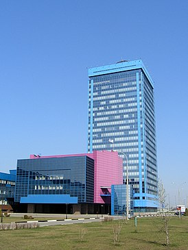

АВТОВАЗ
АО «АвтоВА́З» — советская и российская автомобилестроительная компания. Крупнейший производитель легковых автомобилей в России (ранее — и в Восточной Европе[2][3]). Завод основан в 1966 году в городе Тольятти, где находятся штаб-квартира и основное производство. Входит в перечень системообразующих организаций России.
Производит автомобили под собственной торговой маркой Lada, до марта 2022 года также выпускал автомобили марки Nissan, Renault и Datsun. Кроме того, АвтоВАЗ поставляет другим производителям машинокомплекты для выпуска автомобилей марки Lada и их модификаций. Ранее выпускал автомобили марки ВАЗ с наименованиями «Жигули», «Спутник», «Samara», «Ока». Помимо перечисленных марок автомобилей на экспорт в некоторые страны мира поставлялись автомобили под маркой «Riva».
Экспорт
Экспортное название автомобиля выбрано Lada (от слова «ладья» — основного элемента логотипа), в то время как на внутреннем рынке автомобиль продавался как Жигули (по названию гор). Первые автомобили Lada (ВАЗ-2101) выставлялись на экспорт с 1971 года. Среди стран, импортировавших Lada, были и страны из Совета экономической взаимопомощи (эти поставки частично покрывали стоимость отдельных видов комплектующих для завода), и покупавшие автомобили за свободно конвертируемую валюту[60].
В начале семидесятых на автомобили, произведённые в СССР, приходилось более 60 % всех денежных средств от экспорта продукции отечественного машиностроения. Вскоре эта доля увеличилась до 80 %. Спрос на автомобили Lada объяснялся относительно современной конструкцией, качеством изготовления, разумной ценовой политикой. Объём продаж в различных странах в известной степени зависел от наличия в них развитой сети дилеров, а также доступности СТО и необходимых запчастей. Хорошая адаптированность автомобилей к эксплуатации в регионах с суровым климатом сделала их популярными в странах Северной Европы: Финляндии, Швеции, Норвегии, Исландии. Так, в таксомоторных компаниях Будапешта немалую долю автомобилей составляла Lada, а эксплуатация этих автомобилей в интенсивном режиме оказалась наиболее эффективной[61].
Здание генеральной дирекции

Savchuk Alexei Mihailovich ©